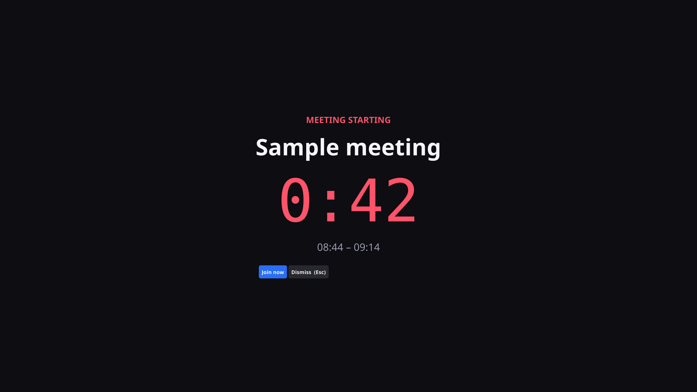

You stop missing meetings.
Your next meeting sits in the Linux system tray with a live countdown. A minute before it starts, the whole screen goes red until you deal with it.
mise use -g github:Spriz/meeting-blaster
Two states, and that's the whole app
Most of the day it stays out of your way. It only becomes loud when being quiet would cost you something.
Quiet
A tray label counting down, and a menu with the rest of today. Click any meeting to join it — Meet, Zoom, Teams, Webex and eight others are detected automatically.
Meeting starting
0:47
Loud
A full-screen takeover at a lead time you choose. One key joins the call, one dismisses it. It does not fade away on its own unless you ask it to.
Pick which screens it blocks
An alert on the monitor you aren't looking at is not an alert. Choose one behaviour and it stays predictable.
Always the primary display, wherever the pointer happens to be.
What it actually looks like
Not a mockup — the alert running on a 4K display, captured from the app.

The details
- CalendariCalendar subscriptions via
webcal://,http://,https://, or local.icsfiles. Google-hosted private iCal feeds remain supported, includingX-GOOGLE-CONFERENCEand Meet links. - Feed privacyPrivate remote feed URLs are bearer credentials. They are saved in your config because the app needs them to fetch events, but subscription lists and CLI confirmations show the configured name or a safe generic fallback, never the full URL.
- Join linksMeet, Zoom, Teams, Webex, Whereby, Jitsi, GoTo, BlueJeans, Chime, Around, Discord and Slack huddles.
- Lead timesFull-screen alert and desktop notification fire independently, so you can get a nudge at five minutes and the takeover at one.
- DesktopBuilt and tested on Ubuntu 24.04, GNOME 46, X11 and XWayland.
mise run installadds a menu entry and icon under your home directory, no root. - Built withGo and Fyne, in a single binary. MIT licensed.
Setting it up
Manage iCalendar subscriptions from Preferences… in the tray menu — no Google API project or account sign-in is required. The command line is only the one-time bootstrap when no subscription exists yet.
- Find an iCalendar subscription. Google Calendar calls its private feed the “Secret address in iCal format”; Outlook/M365 and Nextcloud provide subscription links too.
- Manage subscriptions in Preferences… Open the tray menu, choose Preferences…, and add or remove feeds there. It accepts
webcal://,http://,https://, and local.icsfiles. - Bootstrap a first subscription when needed. With no subscriptions there is no tray menu yet: the app prints setup guidance and exits. Add the first feed with
meeting-blaster --add-calendar "webcal://example.com/your-calendar.ics", then use Preferences… for everything after that. - Keep the URL private. Anyone who has a private feed URL may be able to read the calendar. The app uses the configured feed name, or a safe generic fallback, in subscription lists and CLI confirmations instead of showing the full URL.